What this topic covers
This topic covers two ways traffic is directed in real time. The first is traffic lights (semaforo), meaning the ordinary three-color signal and several special ones. The second is the hand, arm, and whistle signals of a traffic officer (agente del traffico). One rule overrides everything. A traffic officer's signals beat the lights and the signs. When an officer is directing, obey the officer.
The US bridge: three habits to unlearn. First, there is no right turn on red in Italy: red means red for every direction. Second, the US flashing red (treat as stop sign) does not exist as a single light: in Italy two alternately flashing red lights mean an absolute stop (railroad crossing, movable bridge, ferry), and a single flashing light is always yellow, a caution, never a stop. Third, arrows here can be red or yellow as well as green, and a red X over your lane means the lane is closed.
The standard vehicle traffic light
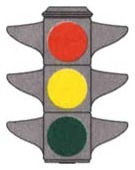
- Red means stop before the stop line (linea di arresto), and you must not cross it. On a vertical signal red is at the top. On a horizontal one it is on the left. The red lens may be larger.
- Green means you may go straight, left, or right, but green is not a free pass. Turning left, you must yield to oncoming traffic, and you may enter the junction only if you can clear it before red.
- Steady yellow comes on between green and red. Stop before the line if you can do so safely. If you have already entered the junction, clear it promptly.
- A green light that has been on a long time may change soon, so approach ready to stop.
- The standard light governs every vehicle, bicycles and scheduled public-transport vehicles included.
- A light that is off or broken, or showing only its flashing yellow, no longer regulates the junction. You may cross with the utmost caution and at moderate speed, and the default rule applies, which is to yield to traffic from the right, unless a sign beside the light says otherwise.
Arrow and reversible-lane lights
Two families of lights control individual lanes rather than the whole junction. Both apply to every vehicle heading where the arrow points, bicycles included, and neither has anything to do with slow-vehicle, overtaking, or emergency lanes.
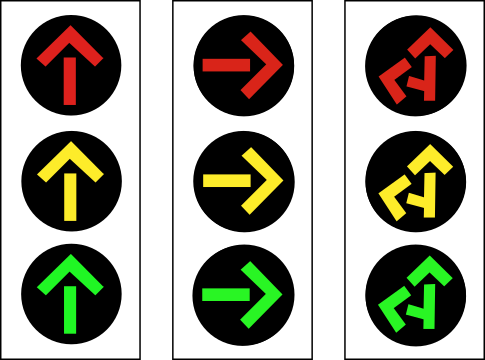
- Arrow signals stand at a junction and replace the round lights for one direction of travel. A green arrow allows travel in that direction and a red arrow forbids it. A steady yellow arrow means clear the junction; a flashing yellow arrow means proceed with particular caution. An arrow signal that is switched off lets you pass, with particular caution.
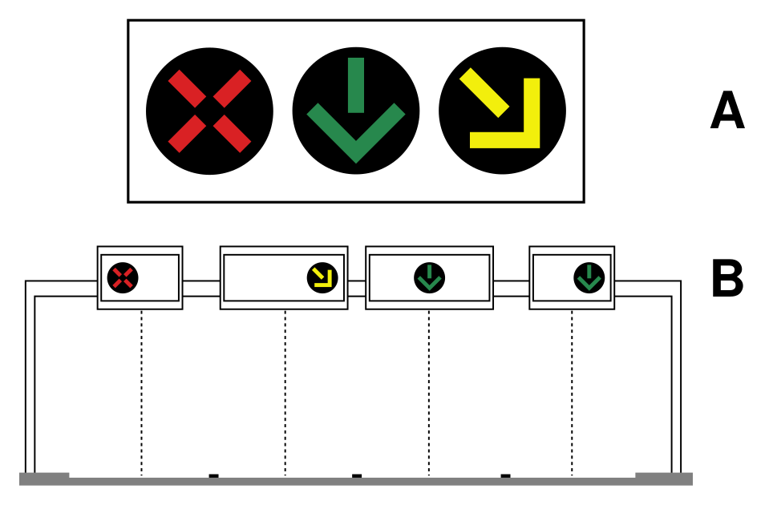
- What a reversible lane is. On a wide road, one lane can be made to carry traffic in either direction depending on the need: toward the city in the morning rush, away from it in the evening, or the other way while road work closes part of the road. Such a lane is called reversible, and it can exist only on a carriageway of at least three lanes, one-way or two-way. Bridges and tunnels in the US that switch a middle lane with overhead lights work the same way.
- Where the signal is. Because the direction of a lane can change, drivers need to be told which lanes are open to them right now. The signal hangs on a gantry above the road (B in the figure), with one head over each lane (A). Each head speaks only for the lane directly beneath it.
- How to read a head. A green arrow pointing down means the lane below is open to you. A red X means that lane is closed to you: it is carrying traffic the other way, or it is shut. A flashing yellow arrow pointing diagonally means the lane below is about to close, so leave it for the lane the arrow points to.
- The trap. The red X is not a red light. It does not tell you to stop and wait for a yellow; it tells you to be in a different lane. Keep moving, in a lane with a green arrow. These signals regulate every vehicle, bicycles included, and never pedestrians.
- Do not confuse the two families: ordinary arrow signals show red, yellow, or green arrows; the reversible-lane signal is the one with the red X.
Special-user and advisory lights
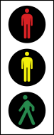
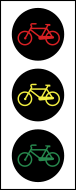
- The pedestrian signal works like the standard three-color light at the top of this review. Green lets pedestrians cross, steady yellow tells those already crossing to clear quickly, and red means do not cross. There are matching bicycle signals, reserved for cyclists only, not for mopeds or motorcycles.
- A note for US drivers: at a signalized crossing, pedestrians do not always have priority. On your green, the parallel crossing shows them red. Going straight you owe them no yield (just let anyone already on the stripes finish); the duty to yield to pedestrians belongs to turns.
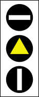
- The public-transport signal uses white bars, and it applies to every scheduled public-transport vehicle, bus, trolleybus, or tram, not only rail vehicles. The horizontal bar (top) means stop, the vertical bar (bottom) means proceed, and the yellow triangle between them is its yellow phase, not a roadwork warning. It does not regulate pedestrians and has nothing to do with railroad crossings, stations or ferry piers.
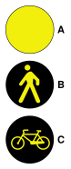
- What the figure shows. Not one traffic light but three separate lights, each a single flashing yellow disc, drawn one above the other so you can compare them: A at the top is plain, B in the middle carries a pedestrian symbol, C at the bottom a bicycle symbol. On the road you meet them one at a time.
- Type A, the plain flashing yellow, stands on its own at a dangerous spot as a generic caution: slow down and proceed with care. It regulates nothing and it is not a signal for public-transport vehicles.
- The situation types B and C solve. You are stopped at a junction and your light turns green, so you turn right. To complete the turn you must drive across the crosswalk on the side street, and at that moment the pedestrians on that crosswalk also have green, because they are walking in the same direction you were heading. Your green did not give you the crosswalk; you and they share it, and by the general rule a vehicle that turns yields to whoever is crossing. Where a bicycle path runs alongside you, the same conflict arises with cyclists riding straight while you cut across their path.
- What types B and C do. They make that shared moment visible. Each is a flashing yellow light mounted beside the ordinary vehicle traffic light, and it flashes while your light is green as a reminder: turning, you must yield to pedestrians on the crosswalk (type B, the pedestrian symbol) or yield to bicycles crossing your path (type C, the bicycle symbol). They add no new rule and never stand on their own; they point at a duty you already have, at a place where drivers forget it.
- What they are not. Neither marks a place or a lane. B does not announce a pedestrian mall, and C does not mark a lane reserved for bicycles, mopeds, or two-wheelers. Both concern only the turn, and both speak to drivers, not to the pedestrians or cyclists themselves.
The green wave (onda verde)
On a city street with several traffic lights in a row, the lights can be timed so that a driver holding one steady speed reaches each of them just as it turns green. The green then seems to travel down the road ahead of that driver: this is the green wave (onda verde). It exists only on urban roads with a series of synchronized lights, never on autostrade.
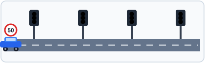
Watch the car in the animation: at the advised speed it meets every light on green, and each light turns yellow and then red only after it has passed. Drive faster and you arrive before the green; drive slower and you arrive after it. Either way you drop out of step and catch a red.
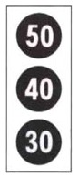
- The green-wave signal tells you which speed keeps you in step. It looks like a traffic light, but its three discs carry speeds (here 50, 40 and 30 km/h), and only one is lit at a time: the lit one is the speed to hold right now to meet green at the next light.
- The trap. The lit number is a recommendation, nothing more. It is not a speed limit, not a minimum speed, not a following distance, and not a warning to proceed with caution; when the signal is dark it advises nothing. Its whole purpose is to help you catch the greens.
Flashing red and railroad-crossing lights
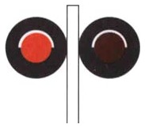
Two alternately flashing red lights require you to stop, vehicles and pedestrians alike. You find them at a railroad crossing without barriers or with half-barriers, and at a movable bridge (ponte mobile) or ferry jetty. They stand at the crossing itself. The 150 m (165 yd) advance zone belongs to the warning triangle and the countdown panels. They come on just before the train arrives and before the half-barriers lower, stay on until it has passed, are usually on the right, and are paired with an audible signal. If they are flashing and the half-barrier is still up, stop at the stop line. Do not accelerate to beat it, whether or not you see or hear a train. The stop is owed whatever the crossing holds: one track or several, and whether or not other vehicles are already waiting. A single flashing yellow light, by contrast, is a generic caution that means slow down and proceed carefully.
Traffic-officer arm signals
The officer is a traffic light, and his outstretched arms are its bar. If you face the bar, seeing his chest or his back, your light is red. If you run along the bar, seeing his side, your light is green. One arm up is yellow. Arms at a right angle open one side only, the traffic from his left.
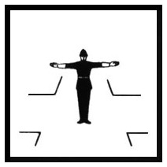
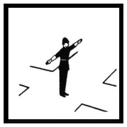
- Chest or back toward you, arms out, means red. Stop before the line. You may neither go straight nor turn.
- His side toward you, arms out along your path, means green. Go with caution, and you may turn right.
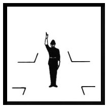
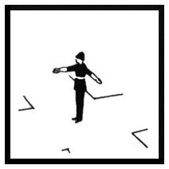
- One arm raised means steady yellow, for everyone. Stop before the junction if you can do so safely, and clear it if you are already in it.
- Arms at a right angle means green for one flow only, the traffic from his left, which may go straight or turn either way. Everyone else, from his right, in front of him or behind him, has red.
The officer's whistle
A long whistle blast means stop if you have not yet entered the junction. It stops everyone, not only heavy vehicles. It is also used to clear the junction and to let emergency vehicles through. Whoever is already in the junction should clear it and stop just after.
How to recognize a traffic-police officer
Signals from an officer bind you only if you can tell that the person is one. The law fixes two marks of recognition.
- The uniform. Officers on traffic duty are in uniform.
- The white-and-red paddle (paletta). This is their distinctive signal (segnale distintivo): the disc on a handle, white with a red border, that they raise to order you to stop or wave you on. When an officer in uniform or holding the paddle signals you to stop, you must stop; the officer may then check your documents and inspect the vehicle's equipment.
- The trap. Nothing else counts as a mark of recognition. A white-and-black paddle does not exist, and gloves and reflective stripes are ordinary safety wear that anyone may put on. The only other paddle you will meet, the red-and-green one of a work-zone flagger (moviere), belongs to a road worker, not to the police.
What to carry and show on request
Keep these ready.
- Carry your driving license (patente), valid and the original, on paper or as the digital copy in the official IO app. A photocopy or a phone photo is not accepted. If you are driving on a non-EU license, such as a US one, then in your first 12 months of residency you must carry it together with an International Driving Permit or a sworn Italian translation.
- Carry your vehicle registration, the carta di circolazione (now part of the Documento Unico di Circolazione).
- Carry your proof of insurance (RC Auto), the certificate, on paper or digital. There is no longer a windshield insurance disc; cover is checked electronically by license plate, so no sticker is needed.
You must also carry and use two pieces of safety equipment.
- Carry a warning triangle, and set it at least 50 m (55 yd) behind a vehicle stopped on the carriageway.
- Carry a high-visibility vest or straps, CE-approved, and wear them whenever you step onto the road, emergency lane, or pull-off outside built-up areas at night or in poor visibility.
Driving without insurance is the costly violation, carrying a heavy fine plus seizure of the vehicle. Missing a document or the safety gear is a smaller administrative fine.
What an officer may not demand at a stop is its own little trap family: no first-aid kit, no ownership certificate, no codice fiscale, no bollo (ownership-tax) receipt. The list to know is the license, the registration, the insurance certificate, and the triangle on board.
Summary of key points
- An officer overrides the lights and signs, so obey the officer first.
- Red means stop before the line. Green means go, but still yield when turning left, and enter only if you can clear the junction. Steady yellow means stop if safe, otherwise clear.
- A green arrow means go, and a red arrow or red X means stop. A flashing yellow arrow means caution, or change lane on a reversible-lane signal.
- Special lights include pedestrian and bicycle signals, public-transport white bars (top stop, bottom go), flashing yellow B or C to yield to pedestrians or bikes when turning, and the green-wave advised speed.
- Two alternately flashing reds mean stop, at a railroad crossing, movable bridge, or ferry. A lone flashing yellow means caution.
- With an officer, chest or back toward you means red, his side toward you means green, one arm up means yellow, and arms at a right angle open only the flow from his left. A long whistle means stop or clear the way. Carry your license, registration, and insurance, plus a warning triangle and hi-vis vest, and show them on request. An officer cannot demand the first-aid kit, ownership certificate, codice fiscale, or bollo receipt.
- No right turn on red, ever, and remember the color grammar: two alternating reds mean an absolute stop, and a lone flashing yellow means caution, never a stop.